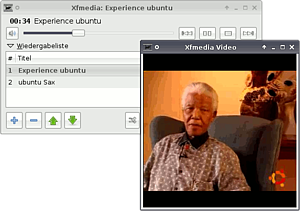
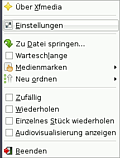
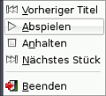
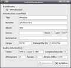

Xfmedia
Archivierte Anleitung
Dieser Artikel wurde archiviert, da er - oder Teile daraus - nur noch unter einer älteren Ubuntu-Version nutzbar ist. Diese Anleitung wird vom Wiki-Team weder auf Richtigkeit überprüft noch anderweitig gepflegt. Zusätzlich wurde der Artikel für weitere Änderungen gesperrt.
Anmerkung: Der Nachfolger von Xfmedia ist das Programm Parole.
Zum Verständnis dieses Artikels sind folgende Seiten hilfreich:
Xfmedia  ist ein Mediaplayer, der auf Xine basiert und war in der Vergangenheit der Standard-Medienplayer der Desktop-Umgebung Xfce. Das Programm kommt minimalistisch daher, bietet trotzdem einen großen Funktionsumfang. Neben der Wiedergabe und Verwaltung von Audio-Dateien werden auch Videoformate aller Art abgespielt – sofern die notwendigen Codecs installiert sind.
ist ein Mediaplayer, der auf Xine basiert und war in der Vergangenheit der Standard-Medienplayer der Desktop-Umgebung Xfce. Das Programm kommt minimalistisch daher, bietet trotzdem einen großen Funktionsumfang. Neben der Wiedergabe und Verwaltung von Audio-Dateien werden auch Videoformate aller Art abgespielt – sofern die notwendigen Codecs installiert sind.
An optischen Speichermedien werden CDs, DVDs und Video-CDs unterstützt. Zusätzlich kann das Programm Digital Video Broadcasting (DVB) nutzen und erlaubt somit den Genuss von digitalem Fernsehen auf dem Computer. Auch das Abspielen von Internetstreams ist möglich.
Das Projekt ist verwaist und hat somit niemanden, der sich um Fehlerbehebung und Weiterentwicklung kümmert.

Installation¶
Xfmedia lässt sich bis Ubuntu 10.04 über das folgende Paket installieren [1]:
xfmedia (universe)
 mit apturl
mit apturl
Paketliste zum Kopieren:
sudo apt-get install xfmedia
sudo aptitude install xfmedia
Nach erfolgreicher Installation ist das Programm unter "Anwendungen -> Multimedia -> XFMedia" zu finden.
Alternativ kann das Programm mittels des Befehls xfmedia gestartet werden [2]. Mehr Informationen hierzu liefert der Befehl:
xfmedia --help
Konfiguration¶

Um zum Einstellungsmenü zu gelangen, führt man im oberen Teil des Players einen Rechtsklick ( ) aus. Im sich nun öffnenden Menü "Einstellungen" auswählen.
) aus. Im sich nun öffnenden Menü "Einstellungen" auswählen.
"Optionen" - Einstellungen zur Wiedergabeliste, zum Fensterverhalten und am Symbol vornehmen
"Audio-Visualisierung" - Visualisierung auswählen
"Geräte" - Pfade zu optischen Geräten sowie Audio- und Videotreiber ändern
"Tastenkürzel" - Steuerungskommandos
Geräte¶
Die Standardeinstellungen /dev/cdrom und /dev/dvd in /media/cdrom ändern, damit das Programm auf die entsprechenden Laufwerke zugreifen kann.
Menüleiste¶
 Um das Programmsymbol in der Systemleiste anzeigen zu lassen, unter "Optionen -> Symbol in der Systemleiste anzeigen" aktivieren. Das Programm kann nun per Rechtsklick auf das Symbol  mit den Basisfunktionen gesteuert werden. Ein Linksklick versteckt den Player oder zeigt ihn an. Je nachdem, mit welcher Aktion die mittlere Maustaste belegt wird, kann man das Programm auch mit dieser steuern.
mit den Basisfunktionen gesteuert werden. Ein Linksklick versteckt den Player oder zeigt ihn an. Je nachdem, mit welcher Aktion die mittlere Maustaste belegt wird, kann man das Programm auch mit dieser steuern.
Visualisierung¶
Nachdem die Visualisierung ausgewählt wurde, im Einstellungsmenü den Punkt "Audiovisualisierung anzeigen" anwählen, damit diese gestartet wird.
Bedienung¶
| Menü | |
| Element | Bedeutung / Funktion |
 | Wiedergabe steuern |
| Stück(e) zur Wiedergabeliste hinzufügen | |
| Angewähltes Element aus der Wiedergabeliste löschen | |
| Wiedergabeliste sortieren | |
| Zufallswiedergabe | |
| Wiederholung | |
| neue Wiedergabeliste erstellen | |
| Wiedergabe öffnen | |
| Wiedergabeliste speichern | |
ID3-Tags¶
 Um die Dateiinformationen einzelner Audiodateien zu bearbeiten, das gewünschte Stück anwählen und einen Rechtsklick () ausführen. Im sich nun öffnenden Menü den Punkt "Dateiinformationen" anwählen und die gewünschten Änderungen vornehmen. Abschließend speichern .
Tastenkürzel¶
| Tastenkürzel | |
| Taste(n) | Beschreibung |
| P | Wiedergabe |
| N | nächstes Stück |
| B | vorheriges Stück |
| Pause | |
| Q | Beenden |
| V | Vollbildmodus (an/aus) |
| - | Lautstärke verringern |
| ⇧ + + | Lautstärke erhöhen |
| M | Stumm |
- Erstellt mit Inyoka
-
 2004 – 2017 ubuntuusers.de • Einige Rechte vorbehalten
2004 – 2017 ubuntuusers.de • Einige Rechte vorbehalten
Lizenz • Kontakt • Datenschutz • Impressum • Serverstatus -
Serverhousing gespendet von